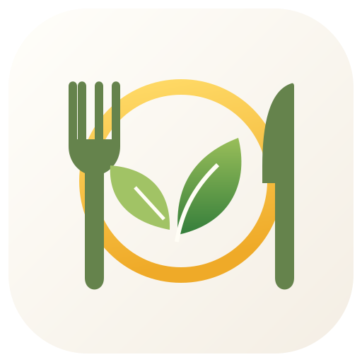

Le cene della settimana, più semplici da organizzare

Il menù scolastico che già conosci, con una novità: proposte per le cene della famiglia, ricette e lista della spesa.
🏫 Pranzo e cena insieme
Consulta il pranzo scolastico e scopri proposte per la cena che tengono conto dei pasti della settimana.
👨👩👧👦 Profilo famiglia
Indica quante persone mangiano, lo stile alimentare, gli ingredienti graditi e quelli da escludere.
🔄 Cambia cena
Non ti convince una proposta? Puoi sostituirla e consultare la ricetta con i passaggi di preparazione.
🛒 Lista della spesa
Raccogli gli ingredienti delle cene suggerite con quantità indicative per la tua famiglia.
La nuova versione è gratuita durante questa sperimentazione. Le proposte non sostituiscono il parere di un professionista: verifica sempre ingredienti, allergeni, etichette e porzioni. Le preferenze del profilo sono salvate sul dispositivo.